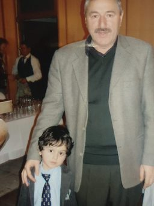

Hi! I’m Talu.
I strive to make biology fully computable.
I am an M.Sc. student in Computer Science at the Swiss Federal Institute of Technology Zurich (ETH Zurich), supported by the German Scholarship Foundation (Studienstiftung).
I am currently developing novel enzymes for DNA synthesis at {Stealth}. Our team won first place and CHF 10,000 at Bioincubate ETH.
Previously, I:
- Developed foundation models for protein and small molecule design at GenBio AI.
- Worked on protein function prediction at UHN / the Vector Institute in Toronto, also winning a silver medal in the CAFA6 challenge.
- Worked on antibody generation at Prescient Design (Roche / Genentech), with a patent pending on machine learning for protein design.
- Co-designed hardware and software for genome analysis with the Safari Research Group at ETH Zurich.
Next stop: Seattle. In March 2027, I will be joining the Baker Lab at the Institute for Protein Design at the University of Washington for my Master's thesis. I would love to connect if you are a current or future student, or an alum!
I grew up in Değirmendere, Turkey and Ulm, Germany, but in recent years I have called Zurich, Basel, Edinburgh, Toronto, and Paris home.
Before working with the building blocks of life, I designed and built robots to play soccer, perform theatre shows, and go on rescue missions in high school.
Please reach out to me anytime. I love to meet like-minded friends, especially if you have an interest in any kind of ball sport!
You can reach me at talu.gueloglu@gmail.com, or find me on X, LinkedIn, and Google Scholar.